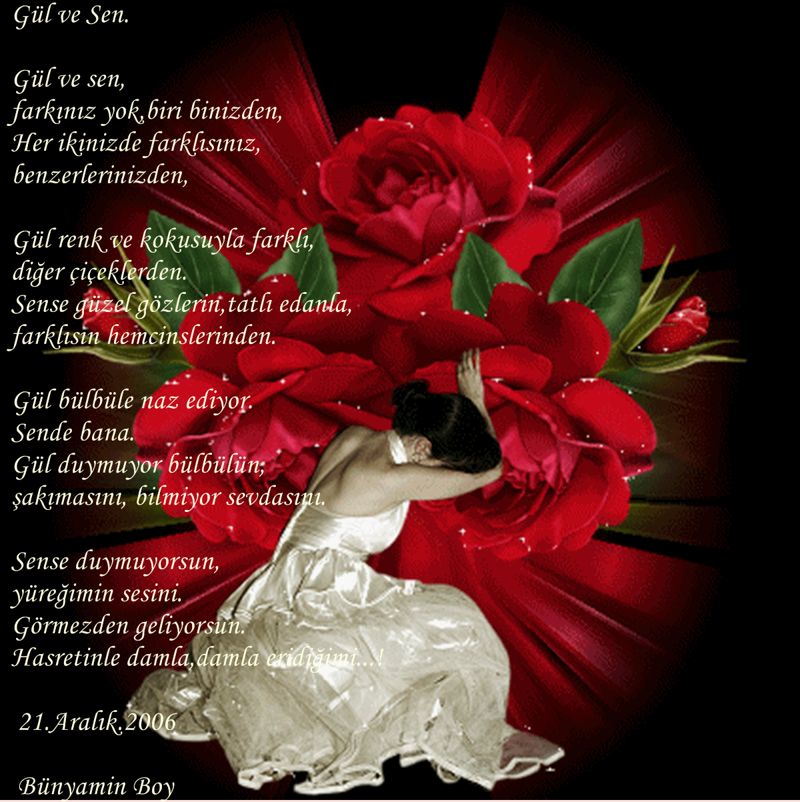

ANASAYFA
ŞAİRLERİN HAYATLARI
MÜZİKLİ ŞİİRLER
GALERİ
HAKKIMIZDA
İLETİŞİM
Tut Yüreğimden Ustam - Tuncel KURTİZ
Ağlama - Ahmet ORMANCI
Dünyanın En Güzel Şiiri
Hadi Git - Cemal SAFİ
Ağlatan Şiir - Ahmet Selçuk İlkan
